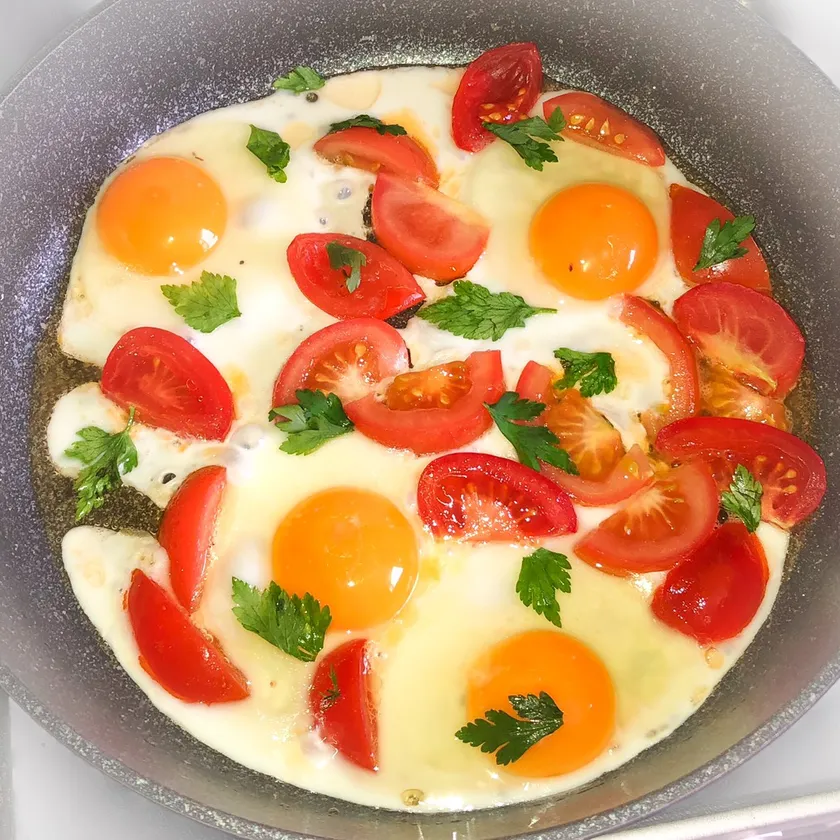

Как приготовить яичницу

Описание:
В яичнице много белка, который нужен нашему организму, к тому же он хорошо усваивается.
Ну и конечно же это очень вкусное блюдо, которое занимает место номер один в нашем рейтинге!
Ингредиенты:
- Яйца
- Соль
- Перец
- Зелень
- Помидоры
Шаги:
- Моем с мылом яйца и разбиваем в чистую и глубокую тарелку
- Кладем в сковородку сливочное масло и на медленном огне растапливаем его
- Размешиваем хорошенько яйца с зеленью и черным перцем
- Очищаем кожуру помидора и режем его на кусочки
- Кладем кусочки помидора в сковородку и немного жарим его
- Ставим огонь на максимум и пускаем в сковородку яйца
- Постоянно перемешивая доводим до готовности
Поздравляю! Ваше вкусное блюдо готово! Наслаждайтесь..
Узнайте как приготовить
вкуснейший смузи
Home